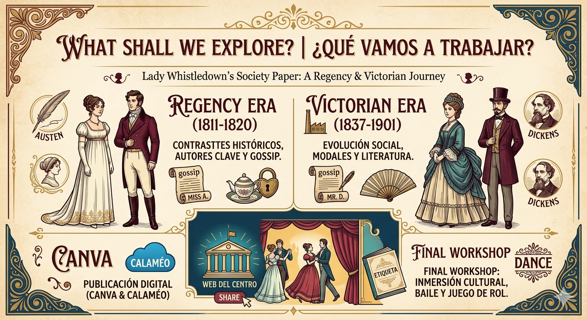
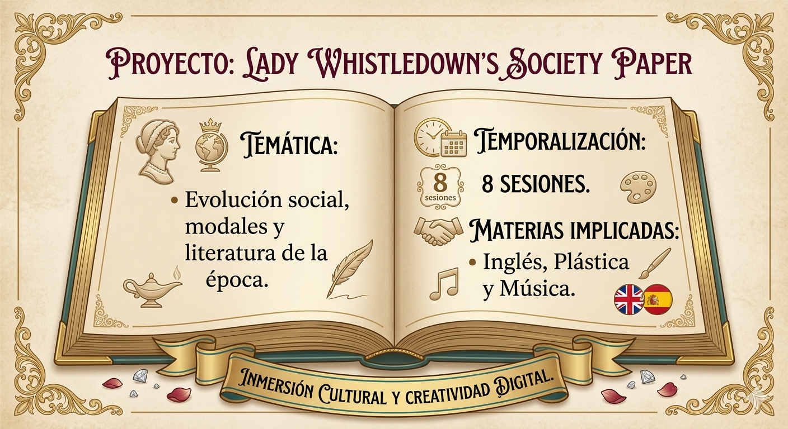

Descripción
En este proyecto nos centraremos en que el alumnado conozca los contrastes entre la época de la Regencia y la Era Victoriana de una manera totalmente práctica. A través de él, los estudiantes investigarán hitos históricos y autores clave de la literatura británica para convertirlos en "pistas" y "gossip" (noticias de sociedad), utilizando la estética de Lady Whistledown en una publicación diseñada por ellos mismos en Canva. Posteriormente se unificará en Calaméo para poder compartirlo en la web del centro.
El objetivo final es la organización y participación en un taller de inmersión cultural, donde pondrán en práctica lo aprendido tales como protocolo y etiqueta de la época, además de su representativo baile. Con esto se pretende no solo mejorar su competencia lingüística y digital, sino también fomentar su creatividad y capacidad organizativa, haciendo que el aprendizaje de la lengua extranjera sea una experiencia memorable y compartida con el resto del centro.

Addressed to:
